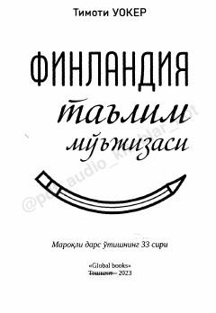

FTFinlyandiya ta'lim tizimidagi muvaffaqiyatli tajribalar va 33 ta amaliy pedagogik strategiyalar to'plami.
Amerikalik o'qituvchi Timoti Uokerning ushbu asari Finlyandiya ta'lim tizimidagi muvaffaqiyat sirlarini tahlil qiladi. Muallif o'quv jarayonida quvonch, hamkorlik va o'qituvchilarning kasbiy erkinligini ta'minlash orqali ta'lim sifatini oshirish bo'yicha 33 ta amaliy strategiyani taklif etadi.